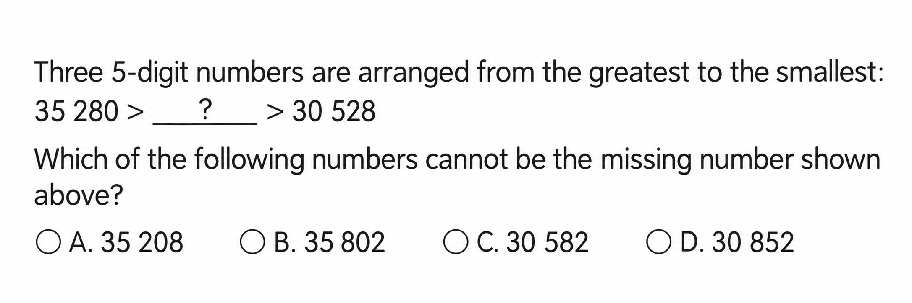

Answer: 5
已掌握
| # | 单词/词组 | 中文意思 | 例句/说明 | 已掌握 |
|---|---|---|---|---|
| noun 名词 | ||||
| 1 | library | 图书馆 | I read books in the library. | |
| 2 | market | 市场 | There is a market near my home. | |
| 3 | restaurant | 餐馆 | We eat dinner in a restaurant. | |
| 4 | nurse | 护士 | The nurse helps patients. | |
| 5 | role | 角色 | I have a role in the play. | |
| verb 动词 | ||||
| 6 | spend | 花费 | I spend one hour reading. | |
| 7 | feel | 感觉 | I feel happy today. | |
| phrase 短语 | ||||
| 8 | Christmas Eve | 平安夜 | We decorate the tree on Christmas Eve. | |
| 9 | mobile phone | 手机 | Mum uses her mobile phone to call Grandma. | |
| adjective 形容词 | ||||
| 10 | soft | 柔软的 | The fur is soft. | |
| 11 | helpful | 有帮助的 | This map is helpful. | |
| 12 | beautiful | 美丽的 | The flower is beautiful. | |
| pronoun 代词 | ||||
| 13 | them | 它们 | I can see them in the garden. | |
| possessive adjective 物主代词 | ||||
| 14 | their | 他们的 | Their bags are blue. | |
| verb phrase 动词短语 | ||||
| 15 | cheer sb. up | 使某人振作起来 | A funny story can cheer him up. | |
| noun/verb 名词/动词 | ||||
| 16 | exercise | 锻炼 | Exercise is good for your health. | |
| adverb 副词 | ||||
| 17 | usually | 通常 | I usually have breakfast at seven. | |
| uncategorized 未分类 | ||||
| 18 | hide | 隐藏 | The children hide behind the tree. | |
| 19 | find | 找到 | I cannot find my pencil. | |
| 20 | fold | 折叠 | Please fold the paper in half. | |
| # | 单词/词组 | 中文意思 | 例句/说明 | 已掌握 |
|---|---|---|---|---|
| adjective 形容词 | ||||
| 1 | enormous | 巨大的 | The elephant is enormous. | |
| 2 | surprised | 惊讶的 | My parents were surprised. | |
| 3 | gentle | 温和的 | Gopal is gentle and polite. | |
| 4 | popular | 受欢迎的 | He is popular in class. | |
| noun 名词 | ||||
| 5 | poem | 诗 | Read the poem. | |
| 6 | worm | 虫子；蚯蚓 | The bird catches a worm. | |
| 7 | goldfish | 金鱼 | The goldfish swims in the bowl. | |
| 8 | leader | 领导者 | The leader helps the group. | |
| 9 | article | 文章 | Read the article. | |
| 10 | salad | 沙拉 | I had salad for lunch. | |
| 11 | court | 球场 | We play on the court. | |
| 12 | roundabout | 旋转木马 | The roundabout is in the playground. | |
| 13 | timetable | 时间表 | The timetable shows my classes. | |
| 14 | staff | 员工 | The school staff are friendly. | |
| 15 | beef | 牛肉 | Is there any beef? Yes, there is. | |
| noun phrase 名词短语 | ||||
| 16 | Parents' Day | 家长日 | Parents' Day is on 15th October. | |
| 17 | a wallet | 钱包 | I gave him a wallet. | |
| verb 动词 | ||||
| 18 | knock | 敲门；敲门声 | Please knock on the door before you come in. | |
| 常见动词 Common Verbs | ||||
| 19 | play | 玩；戏剧/剧本 | I play football. | |
| phrase 短语 | ||||
| 20 | Causeway Bay | 铜锣湾 | We went shopping in Causeway Bay. | |
| verb phrase 动词短语 | ||||
| 21 | look at shells | 看贝壳 | We look at shells on the beach. | |
| 22 | fly a kite | 放风筝 | We can fly a kite in the country park. | |
| 23 | have a picnic | 野餐 | I want to go there because I want to have a picnic. | |
| 24 | chatting with friends | 和朋友聊天 | He likes chatting with friends. | |
| 25 | playing board games | 玩桌面游戏 | We like playing board games. | |
| 26 | study for my exams | 备考；复习功课 | I was sick so I didn't study for my exams. | |
| uncategorized 未分类 | ||||
| 27 | paragraph | 段落 | Read the first paragraph of the story. | |
| 28 | suitable | 合适的 | These shoes are suitable for running. | |
| 29 | improvement | 提升 | There is an improvement in my handwriting. | |
| adjective phrase 形容词短语 | ||||
| 30 | end-of-year | 期末的 | We are getting ready for the end-of-year exam. | |
| # | 单词/词组 | 中文意思 | 例句/说明 | 已掌握 |
|---|---|---|---|---|
| time/date 时间日期 | ||||
| 1 | February | 二月 | February is the second month. | |
| 2 | November | 十一月 | November is the eleventh month. | |
| 3 | Monday | 星期一 | Monday is a weekday. | |
| 4 | Friday | 星期五 | Friday is a weekday. | |
| time unit 时间单位 | ||||
| 5 | minute | 分 | A minute has 60 seconds. | |
| numbers 数字 | ||||
| 6 | seven | 7 | Seven is 7. | |
| 7 | thirteen | 13 | Thirteen is 13. | |
| 8 | eighteen | 18 | Eighteen is 18. | |
| solid shape 立体图形 | ||||
| 9 | triangular prism | 三棱柱 | A triangular prism has triangular faces. | |
| 10 | hexagonal prism | 六棱柱 | A hexagonal prism has hexagonal faces. | |
| 11 | quadrilateral pyramid | 四棱锥 | A quadrilateral pyramid has one quadrilateral base and four triangular side faces. | |
| 12 | hexagonal pyramid | 六棱锥 | A hexagonal pyramid has one hexagonal base and six triangular side faces. | |
| 13 | sphere | 球 | A sphere is round. | |
| plane shape 平面图形 | ||||
| 14 | hexagon | 六边形 | A hexagon has six sides. | |
| geometry 几何 | ||||
| 15 | right angle | 直角 | A right angle is 90 degrees. | |
| # | 单词/词组 | 中文意思 | 例句/说明 | 已掌握 |
|---|---|---|---|---|
| operations 运算 | ||||
| 1 | addition | 加法 | Addition means putting numbers together. | |
| geometry 几何 | ||||
| 2 | right angle | 直角 | A right angle is 90 degrees. | |
| 3 | perpendicular line | 垂直线 | Perpendicular lines meet at a right angle. | |
| 4 | acute angle | 锐角 | An acute angle is smaller than a right angle. | |
| 5 | grid | 网格 | A grid helps us find positions. | |
| 6 | line segment | 线段 | Draw a line segment. | |
| 7 | identical | 完全相同的 | These two triangles are identical in shape and size. | |
| directions 方向 | ||||
| 8 | direction | 方向 | Direction tells us where to go. | |
| question word 题目词 | ||||
| 9 | count | 数数 | Count from 1 to 10. | |
| shape 形状 | ||||
| 10 | circle | 圈；圆 | Draw a circle around the answer. | |
| comparison 比较 | ||||
| 11 | more | 更多 | 8 is more than 5. | |
| 12 | shortest | 最短的 | Find the shortest line. | |
| time/date 时间日期 | ||||
| 13 | minute hand | 分针 | At three o'clock, the minute hand points to 12. | |
| 14 | common year | 平年 | A common year has 365 days. | |
| operations calculation 运算 | ||||
| 15 | quotient | 商 | The quotient is the answer in division. | |
| 16 | checking | 验算 | Checking by addition shows that 9 - 4 = 5 is correct: 5 + 4 = 9. | |
| teacher math vocabulary 老师数学词汇 | ||||
| 17 | between ... and ... | 在……和……之间 | 7 is between 6 and 8. | |
| 18 | stop | 停 | Stop counting when you reach twenty. | |
| currency money 货币 | ||||
| 19 | cent | 分 | One cent is a small amount of money. | |
| 20 | pay for | 支付 | I pay for the book. | |
| 21 | expensive | 昂贵的 | This toy costs $50. It is more expensive than the $20 toy. | |
| measurement 测量 | ||||
| 22 | height | 高度 | Measure the height of the box. | |
| 23 | length | 长度 | Find the length of the line. | |
| 24 | weight | 重量 | The weight of this bag is 2 kg. | |
| data charts 统计图 | ||||
| 25 | pictogram | 象形图 | Read the pictogram. | |
| directions tool 方向工具 | ||||
| 26 | compass | 指南针 | A compass shows directions. | |
| plane shape 平面图形 | ||||
| 27 | trapezium | 梯形（只有一组对边平行的四边形） | A trapezium has exactly one pair of parallel sides. | |
| 28 | upper base | 上底 | The upper base of this trapezium is 4 cm long. | |
| 29 | lower base | 下底 | The lower base of this trapezium is 7 cm long. | |
| 30 | isosceles trapezium | 等腰梯形 | An isosceles trapezium has two equal legs. | |


